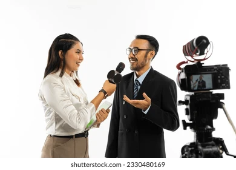
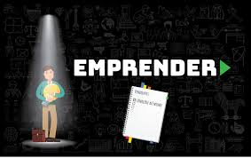

TOP 10 EMPRENDEDORES MUNDIALES
- Elon Musk – CEO de Tesla, SpaceX, Neuralink y The Boring Company. Conocido por impulsar la movilidad eléctrica, la exploración espacial privada y la energía renovable.
- Jeff Bezos – Fundador de Amazon, pionero del comercio electrónico y uno de los hombres más ricos del mundo.
- Bill Gates – Cofundador de Microsoft, revolucionó la informática personal y hoy es un gran filántropo a través de la Fundación Bill & Melinda Gates.
- Mark Zuckerberg – Fundador de Meta (Facebook, Instagram, WhatsApp), líder en redes sociales y en el desarrollo del metaverso
- Warren Buffett – CEO de Berkshire Hathaway, ejemplo de inversión a largo plazo y uno de los empresarios más influyentes del mundo financiero.
- Larry Page y Sergey Brin – Cofundadores de Google, cambiaron la forma en que accedemos a la información en internet.
- Steve Jobs – Cofundador de Apple, visionario de la tecnología con productos como el iPhone, iPad y Mac.
- Richard Branson – Fundador del Grupo Virgin, con negocios en música, aerolíneas y exploración espacial (Virgin Galactic).
- Oprah Winfrey – Empresaria y productora, referente en medios de comunicación, ejemplo de superación y éxito en la industria del entretenimiento.
- Jack Ma – Fundador de Alibaba Group, gigante del comercio electrónico en Asia y una de las mayores compañías tecnológicas del mundo.

Entrevistando al creador de Chatgpt
02/10/25

Emprender esta sobrevalorado?
30/09/25
.jpg)
10 Secretos sobre emprender
25/09/25